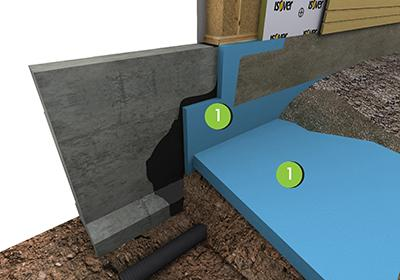
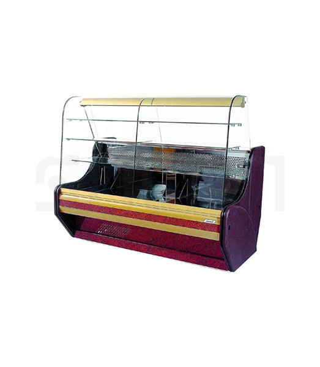

horizontali juosta skelbimai - Skelbiu.lt
2020.10.30 05:13
X Dėl geresnės Skelbiu.lt paslaugų kokybės naudojame slapukus (angl. cookies).
Naršydami toliau, patvirtinate, kad sutinkate su slapukais. Tai bet kada galėsite atšaukti, pakeisdami nustatymus. Skelbiu.lt slapukų politika . Lankomiausias
skelbimų portalas LT RU ( 0 ) Įsiminti skelbimai ( 0 ) Peržiūrėti skelbimai Paieškos ( 0 ) Prisijungti Registruotis horizontali juosta, Visi skelbimai (45) Gauti naujus skelbimus: Ekrane El. paštu + Įdėti skelbimą Įsiminti skelbimai (0) Skelbimų: 45 Tinkamiausi viršuje Tinkamiausi viršuje Naujausi viršuje Atnaujinti viršuje
NEPRALEISKITE NAUJŲ SKELBIMŲ
horizontali juosta, Visi skelbimai
Gaukite naujus skelbimus į ekraną Gaukite naujusskelbimus el. paštu Kaunas prieš 1 d. 8
Led veidrodžiai iš sandėlio
Veidrodžiai su LED apšvietimu, pagaminti veidrožiai iš sandėlio: 1)Veidrodis su led apšvietimu šviečia viršus ir apačia matmenys aukštis 900plotis 780mm šiltas apšvietimas jungtukas šone apačioje dešinėje. Kaina130 eur 2) Veidrodis su... Būklė: nauja 90 € Vilnius, ... spalio 6 d.Sporto kompleksas „pioner-mck-2“ be suolelio
Pakuotės dydis: 128 cm x 46 cm x 18 cm Dydis: 1 m x 0,75 m x 2,45 m Poslinkis nuo sienos: 88 cm baldakimu, 140 cm suoleliui Stogo rėmo ilgis: 75 cm Rėmo plotis: 66 cm Rėmo su horizontalia juosta plotis: 100 cm Žingsnis atstumas: 26 cm ... Būklė: nauja 225 € Vilnius, ... spalio 6 d.Sporto kompleksas „pioner-mck-2“ be suolelio
Pakuotės dydis: 128 cm x 46 cm x 18 cm Dydis: 1 m x 0,75 m x 2,45 m Poslinkis nuo sienos: 88 cm baldakimu, 140 cm suoleliui Stogo rėmo ilgis: 75 cm Rėmo plotis: 66 cm Rėmo su horizontalia juosta plotis: 100 cm Žingsnis atstumas: 26 cm ... Būklė: nauja 225 € Vilnius, ... spalio 5 d.Sports complex Gadzet-2 (swedish wall)
Pakuotės dydis: 140 cm x 40 cm x 18,5 cm Dydis: 1 m x 0,75 m x 2,20 m Atstumas nuo sienos: 88 cm stogelis, 140 cm stalui Stogo rėmo ilgis: 85,5 cm Rėmo plotis: 60 cm Rėmo plotis su horizontalia juosta: 88,5 cm Žingsnio atstumas: 26 cm Svoris: 35... Būklė: nauja 305 € Kaunas prieš 1 d.Oscilografas 0-2 MHz liečiamu ekranu
Dažnių juosta 0-2 MHz, valdymas liečiamu ekranu, vidinis pakraunamas akumuliatorius Vertikalus jautrumas 2 mV- 20 V/ padalai (12 diapazonų) Horizontali skleistinė 1 μs - 50 s padalai ( 21 diapazonas) Max įėjimo siganalas 50 V nuo piko iki piko... Būklė: nauja 48 € Kaunas prieš 1 d.Oscilografas 0-200 khz
Dažnių juosta 0-200 kHz Vertikalus jautrumas 5-20 mV/pad (be daliklio) maksimali pikinė įtampa 50 V įėjimo varža ir talpumas 1MOm ir 20 pF Horizontali skleistinė 500 s/pad iki 10mks/pad Sinchronizacija :auto, normaliai, vienkartinė, stop režimas... Būklė: nauja 33 € Vilnius prieš 1 d.Geltona Montego suknele 40 dydis
Parduodama mažai dėvėta geros būklės klasikinio modelio ryškiai geltonos spalvos berankovė į apačią platėjanti Montego suknelė, 40 dydis (europietiškas). Medžiaga - poliesteris. Ilgis - 91 cm, iškirptės gylis - 16 cm, krūtinė - 92 cm, liemuo -... 40 / 12 / M | Dėvėta | Geltona/gelsva | Vasaros 9 € Vilnius, ... prieš 1 d.Scheppach Bts800, Juostinis diskinis šlifuoklis
Naudotas Scheppach BTS800 juostinis diskinis šlifuoklis. Tvirtas, sunkus korpusas, patvarus ir ilgaamžis variklis. Su šlifavimo disku ir šlifavimo juosta. Juostos laikiklio kampas reguliuojamas - 0 laipsnių (horizontali padėtis), 45 laipsniai... Būklė: naudota 135 € Vilnius, ... spalio 5 d.Švediškos sienelės Pioner-c2p rainbow
Vaikiškas namų sporto kompleksas Pioner-C2P – idealus sprendimas kaip užimti Jūsų vaiko laisvalaikį. Nuo šiol, jei oras lauke subiuręs, Jūsų atžala galės užsiimti naudinga veikla - sportuodamas ant lyno, žiedų, vertikalių kopėčių, skersinio ir... Būklė: nauja 139 € Vilnius, ... spalio 7 d.Švediškos sienelės Pioner-c2p rainbow
Vaikiškas namų sporto kompleksas Pioner-C2P – idealus sprendimas kaip užimti Jūsų vaiko laisvalaikį. Nuo šiol, jei oras lauke subiuręs, Jūsų atžala galės užsiimti naudinga veikla - sportuodamas ant lyno, žiedų, vertikalių kopėčių, skersinio ir... Būklė: nauja 139 € Reklama Vilnius, ... spalio 5 d.Švediškos sienelės Pioner-8 blue-yellow
Netrukus Jūsų vaiko gimtadienis ir Jūs sukate galvą, ką jam padovanoti? Norite, kad dovana būtų naudinga, bet kartu jį nuoširdžiai nudžiugintų? Sveikiname, Jūs radote būtent tai, ko ieškojote! Vaikiška švediška sienelė Pioner-8 padės vystyti... Būklė: nauja 260 € Vilnius, ... spalio 5 d.Švediškos sienelės Pioner-8 blue-yellow
Netrukus Jūsų vaiko gimtadienis ir Jūs sukate galvą, ką jam padovanoti? Norite, kad dovana būtų naudinga, bet kartu jį nuoširdžiai nudžiugintų? Sveikiname, Jūs radote būtent tai, ko ieškojote! Vaikiška švediška sienelė Pioner-8 padės vystyti... Būklė: nauja 260 € Vilnius, ... spalio 14 d.Švediškos sienelės Pioner-a
Niekam ne paslaptis, kad pagrindinis vaikų laikysenos ir ištvermės priešas – „sėdimas“ gyvenimo būdas, pastaruoju metu tapęs įprastu. Jūs jau susitaikėte su tuo, kad Jūsų vaikas laisvalaikį leidžia prie išmaniojo telefono arba kompiuterio ekrano... Būklė: nauja 159 € Vilnius, ... prieš 2 d.Švediškos sienelės Pioner-c4c blue-yellow
Sėdimas“ gyvenimo būdas ir fizinio aktyvumo stoka gali neigiamai atsiliepti Jūsų vaiko sveikatai, pavyzdžiui, sukelti nutukimą, kuris pastaruoju metu tampa vis didesne problema. Jeigu Jūs suprantate, kad Jūsų vaikui gali kilti tokia grėsmė,... Būklė: nauja 285 € Vilnius, ... prieš 2 d.Švediškos sienelės Pioner-c4c blue-yellow
Sėdimas“ gyvenimo būdas ir fizinio aktyvumo stoka gali neigiamai atsiliepti Jūsų vaiko sveikatai, pavyzdžiui, sukelti nutukimą, kuris pastaruoju metu tampa vis didesne problema. Jeigu Jūs suprantate, kad Jūsų vaikui gali kilti tokia grėsmė,... Būklė: nauja 285 € Vilnius, ... prieš 2 d.Švediškos sienelės Pioner-c4c blue-yellow
Sėdimas“ gyvenimo būdas ir fizinio aktyvumo stoka gali neigiamai atsiliepti Jūsų vaiko sveikatai, pavyzdžiui, sukelti nutukimą, kuris pastaruoju metu tampa vis didesne problema. Jeigu Jūs suprantate, kad Jūsų vaikui gali kilti tokia grėsmė,... Būklė: nauja 285 € Vilnius, ... spalio 7 d.Švediškos sienelės Pioner-c2p rainbow
Vaikiškas namų sporto kompleksas Pioner-C2P – idealus sprendimas kaip užimti Jūsų vaiko laisvalaikį. Nuo šiol, jei oras lauke subiuręs, Jūsų atžala galės užsiimti naudinga veikla - sportuodamas ant lyno, žiedų, vertikalių kopėčių, skersinio ir... Būklė: nauja 139 € Vilnius, ... spalio 5 d.Švediškos sienelės Pioner-c2p rainbow
Vaikiškas namų sporto kompleksas Pioner-C2P – idealus sprendimas kaip užimti Jūsų vaiko laisvalaikį. Nuo šiol, jei oras lauke subiuręs, Jūsų atžala galės užsiimti naudinga veikla - sportuodamas ant lyno, žiedų, vertikalių kopėčių, skersinio ir... Būklė: nauja 139 € Vilnius, ... spalio 7 d.Švediškos sienelės Pioner-c2p rainbow
Vaikiškas namų sporto kompleksas Pioner-C2P – idealus sprendimas kaip užimti Jūsų vaiko laisvalaikį. Nuo šiol, jei oras lauke subiuręs, Jūsų atžala galės užsiimti naudinga veikla - sportuodamas ant lyno, žiedų, vertikalių kopėčių, skersinio ir... Būklė: nauja 139 € Vilnius, ... spalio 5 d.Švediškos sienelės Pioner-8 blue-yellow
Netrukus Jūsų vaiko gimtadienis ir Jūs sukate galvą, ką jam padovanoti? Norite, kad dovana būtų naudinga, bet kartu jį nuoširdžiai nudžiugintų? Sveikiname, Jūs radote būtent tai, ko ieškojote! Vaikiška švediška sienelė Pioner-8 padės vystyti... Būklė: nauja 260 € Vilnius, ... spalio 5 d.Švediškos sienelės Pioner-8 blue-yellow
Netrukus Jūsų vaiko gimtadienis ir Jūs sukate galvą, ką jam padovanoti? Norite, kad dovana būtų naudinga, bet kartu jį nuoširdžiai nudžiugintų? Sveikiname, Jūs radote būtent tai, ko ieškojote! Vaikiška švediška sienelė Pioner-8 padės vystyti... Būklė: nauja 260 € Vilnius, ... spalio 5 d.Švediškos sienelės Pioner-8 blue-yellow
Netrukus Jūsų vaiko gimtadienis ir Jūs sukate galvą, ką jam padovanoti? Norite, kad dovana būtų naudinga, bet kartu jį nuoširdžiai nudžiugintų? Sveikiname, Jūs radote būtent tai, ko ieškojote! Vaikiška švediška sienelė Pioner-8 padės vystyti... Būklė: nauja 260 € Vilnius, ... spalio 14 d.Švediškos sienelės Pioner-a
Niekam ne paslaptis, kad pagrindinis vaikų laikysenos ir ištvermės priešas – „sėdimas“ gyvenimo būdas, pastaruoju metu tapęs įprastu. Jūs jau susitaikėte su tuo, kad Jūsų vaikas laisvalaikį leidžia prie išmaniojo telefono arba kompiuterio ekrano... Būklė: nauja 159 € Vilnius, ... spalio 14 d.Švediškos sienelės Pioner-a
Niekam ne paslaptis, kad pagrindinis vaikų laikysenos ir ištvermės priešas – „sėdimas“ gyvenimo būdas, pastaruoju metu tapęs įprastu. Jūs jau susitaikėte su tuo, kad Jūsų vaikas laisvalaikį leidžia prie išmaniojo telefono arba kompiuterio ekrano... Būklė: nauja 159 € 1 2 Įsiminti skelbimai Įdėkite skelbimą Prisijunk ir rask savo įsimintus skelbimus visur – kompiuteryje, telefone, planšetėje ARBA Jungtis su Facebook Jungtis su Google Skelbiu.lt pagalba: +370 664 55727 Darbo laikas: I-V 08:20 - 17:00 Naudojimo taisyklės / D.U.K. Kontaktai Svetainės struktūra D I G I N E T- Hidroizoliacinės medžiagos - Izoliacinės medžiagos ...
- Drabužiai juostelės (30 nuotraukos): suknelės, megztiniai ...
- Horizontali lanksti LED juosta balta/šilta 60LED/12W/m ...
- Horizontalios juostos plėtimas: aprašymas - Įranga - 2020
- ⚙HORIZONTALI JUOSTA SU UŽVEDIMO EFEKTU HTML5, CSS3 IR ...
- Kaip pasirinkti horizontalų juostą butui - Sporto ...
- Sportinė horizontali juosta: matmenys, brėžiniai, tipai ...
- Kaip padaryti horizontalią juostą - Sporto įranga - 2020
- Klaipėdos vėliava ir jos istorija
- horizontali juosta skelbimai - Skelbiu.lt
- Hidroizoliacinės medžiagos - Izoliacinės medžiagos ...
Horizontali juosta su užvedimo efektu html5, css3 ir įkrovos lape Autorius: admininfo.info Paskelbimo Data: August/2020. Ko mums reikia? Vietinis serveris (aš jau sakiau, kad naudoju „Xampp“) ·
- Drabužiai juostelės (30 nuotraukos): suknelės, megztiniai ...
Horizontali juosta ant sienos, jei naudojate tam skirtus tvirtinimo varžtus, gali būti pritvirtinta ant bet kokio vertikalaus paviršiaus. Kokie yra modelio privalumai? Santykinai mažas dydis. Ši horizontali juosta gali tilpti net mažame kambaryje. Ir tai vyksta tuo pačiu metu labai, labai mažai. Jis gali būti bet kokiame aukštyje.
- Horizontali lanksti LED juosta balta/šilta 60LED/12W/m ...
Prekė sėkmingai įdėta į krepšelį. Rinktis daugiau prekių. Užsisakyti
- Horizontalios juostos plėtimas: aprašymas - Įranga - 2020
Senoji Klaipėdos vėliava gerokai skiriasi nuo dabartinės. Senojoje vėliavoje apačioje buvo raudona horizontali juosta, viršuje geltona ir miesto herbas viršutiniame kairiajame kampe. Dabartinės vėliavos spalvos išdėstytos kitaip - horizontaliai.
- ⚙HORIZONTALI JUOSTA SU UŽVEDIMO EFEKTU HTML5, CSS3 IR ...
Horizontali juosta kieme arba name - tai raktas į sveikatą ir gerą nuotaiką. Labai gerai, jei kiekvieną dieną galite pakelti arba nugara ant horizontalaus strypo, o ne užkliuvę treniruoklių salėje, bet ore. Taigi, pradėsime statyti horizontalią juostą gatvėje.
- Kaip pasirinkti horizontalų juostą butui - Sporto ...
Horizontali juosta namams. Šis šliuzas be gręžimo yra pritvirtintas traukos jėga, turintis pavasario dizainą. Kokios priežastys, kodėl daugelis žmonių renkasi horizontalią juostą sportui? Jis turi keletą privalumų: Norėdami ją įdiegti, nereikia sėti skylių į sieną ir nepažeisti visų rūšių tvirtinimo detalių ir varžtų.
- Sportinė horizontali juosta: matmenys, brėžiniai, tipai ...
Horizontali juosta su stuburo išvarža # 8212; jūsų „Move & Flex“ garantija. Stuburo išvaržos gydymas yra sudėtingas ir ilgas procesas. Daug paprasčiau tiesiog sekti „Move & Flex“ ir reaguoti į visas nugaros skausmo apraiškas. Labai svarbu atlikti prevenciją, ypač jei žmogus yra linkęs į osteochondrozę.
- Kaip padaryti horizontalią juostą - Sporto įranga - 2020
Namų horizontali juosta tai daro pats: brėžiniai, diagramos, nuotraukos. Share. Pin. Tweet. Send. Share. Send. Siekiant išlaikyti fizinį tinkamumą, ne kiekvienas turi galimybę eiti į sporto salę, bet pratimai gali būti atliekami namuose. Norėdami sustiprinti rankų raumenis, nugarėlė ir spauda gali padaryti namo horizontalią juostą.
- Klaipėdos vėliava ir jos istorija
Tačiau horizontali juosta, priešingai, padės jums atrodyti kaip mažas grybas, kaip jūsų kūnas bus byrėti. Tall merginos dažnai gėdijasi savo augimą. Bet tai nėra taip baisu, kaip atrodo. Jūs galite dėvėti tą patį, kaip viskas ir vis dar atrodo minkštas ir mažoji princesė. Dėl jums priartėti dalykus su juosmens juosta, ir ...
- horizontali juosta skelbimai - Skelbiu.lt
Horizontali juosta yra simuliatorius, leidžiantis išlaikyti savo kūną geros sveikatos namuose. Horizontalios juostos išvaizda ir funkcionalumas skiriasi. Jie gali būti tiek namuose, tiek šalyje ir gatvėje. Horizontali juosta - tai treniruoklis, kurį galima pagaminti savarankiškai.
Horizontali juosta su užvedimo efektu html5, css3 ir įkrovos lape Autorius: admininfo.info Paskelbimo Data: August/2020. Ko mums reikia? Vietinis serveris (aš jau sakiau, kad naudoju „Xampp“) ·
Horizontali juosta ant sienos, jei naudojate tam skirtus tvirtinimo varžtus, gali būti pritvirtinta ant bet kokio vertikalaus paviršiaus. Kokie yra modelio privalumai? Santykinai mažas dydis. Ši horizontali juosta gali tilpti net mažame kambaryje. Ir tai vyksta tuo pačiu metu labai, labai mažai. Jis gali būti bet kokiame aukštyje.
Prekė sėkmingai įdėta į krepšelį. Rinktis daugiau prekių. Užsisakyti
Senoji Klaipėdos vėliava gerokai skiriasi nuo dabartinės. Senojoje vėliavoje apačioje buvo raudona horizontali juosta, viršuje geltona ir miesto herbas viršutiniame kairiajame kampe. Dabartinės vėliavos spalvos išdėstytos kitaip - horizontaliai.
Horizontali juosta kieme arba name - tai raktas į sveikatą ir gerą nuotaiką. Labai gerai, jei kiekvieną dieną galite pakelti arba nugara ant horizontalaus strypo, o ne užkliuvę treniruoklių salėje, bet ore. Taigi, pradėsime statyti horizontalią juostą gatvėje.
Horizontali juosta namams. Šis šliuzas be gręžimo yra pritvirtintas traukos jėga, turintis pavasario dizainą. Kokios priežastys, kodėl daugelis žmonių renkasi horizontalią juostą sportui? Jis turi keletą privalumų: Norėdami ją įdiegti, nereikia sėti skylių į sieną ir nepažeisti visų rūšių tvirtinimo detalių ir varžtų.
Horizontali juosta su stuburo išvarža # 8212; jūsų „Move & Flex“ garantija. Stuburo išvaržos gydymas yra sudėtingas ir ilgas procesas. Daug paprasčiau tiesiog sekti „Move & Flex“ ir reaguoti į visas nugaros skausmo apraiškas. Labai svarbu atlikti prevenciją, ypač jei žmogus yra linkęs į osteochondrozę.
Namų horizontali juosta tai daro pats: brėžiniai, diagramos, nuotraukos. Share. Pin. Tweet. Send. Share. Send. Siekiant išlaikyti fizinį tinkamumą, ne kiekvienas turi galimybę eiti į sporto salę, bet pratimai gali būti atliekami namuose. Norėdami sustiprinti rankų raumenis, nugarėlė ir spauda gali padaryti namo horizontalią juostą.
Tačiau horizontali juosta, priešingai, padės jums atrodyti kaip mažas grybas, kaip jūsų kūnas bus byrėti. Tall merginos dažnai gėdijasi savo augimą. Bet tai nėra taip baisu, kaip atrodo. Jūs galite dėvėti tą patį, kaip viskas ir vis dar atrodo minkštas ir mažoji princesė. Dėl jums priartėti dalykus su juosmens juosta, ir ...
Horizontali juosta yra simuliatorius, leidžiantis išlaikyti savo kūną geros sveikatos namuose. Horizontalios juostos išvaizda ir funkcionalumas skiriasi. Jie gali būti tiek namuose, tiek šalyje ir gatvėje. Horizontali juosta - tai treniruoklis, kurį galima pagaminti savarankiškai.
 